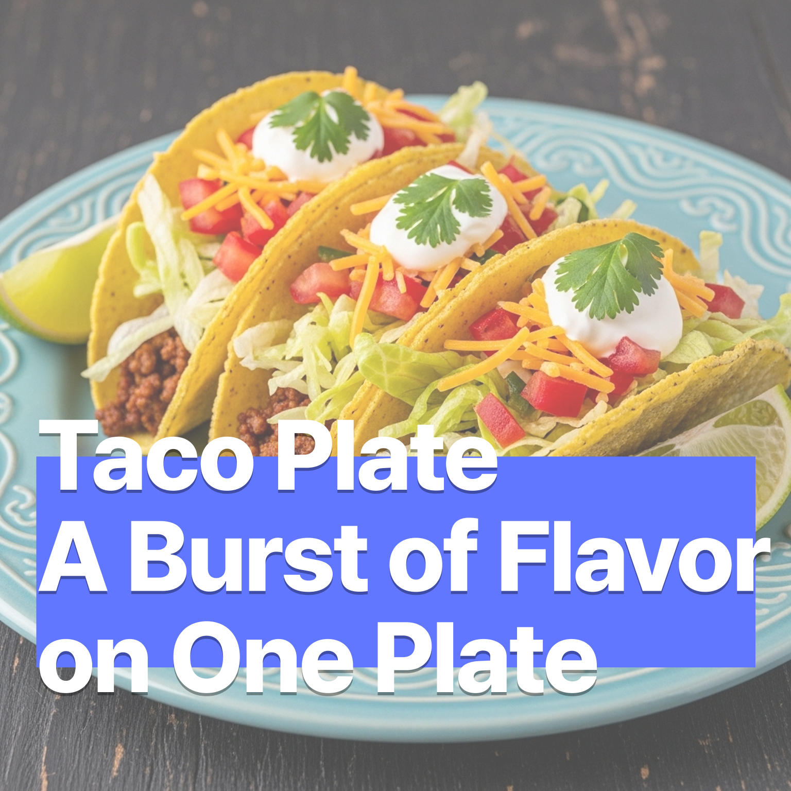

타코 플레이트 – 한 접시에 담긴 화려한 맛
2025-07-07

타코 플레이트 – 한 접시에 담긴 화려한 맛
타코는 또띠야(옥수수나 밀가루로 만든 얇은 빵)에 고기, 채소, 치즈, 아보카도, 사워크림 등을 올려 싸먹는 멕시코의 대표적인 길거리 음식입니다. 간단하면서도 다양한 재료와 소스 조합으로 풍부한 맛을 즐길 수 있어 전 세계적으로 인기가 많습니다. 이제 집에서도 타코의 매력을 한 접시에 담아볼까요?
🛒 재료 (2인분 기준)
- 옥수수 또는 밀가루 또띠야 4장
- 다진 소고기 또는 닭고기 200g
- 타코 시즈닝 1팩 (또는 고춧가루, 커민, 오레가노, 소금, 후추 혼합)
- 양상추 또는 로메인 상추 약간 (잘게 썰기)
- 토마토 1개 (깍둑썰기)
- 양파 ½개 (다지기)
- 아보카도 1개 (슬라이스 또는 과카몰리로 준비)
- 슈레드 체다 치즈 ½컵
- 사워크림 또는 플레인 요거트 약간
- 라임 1개 (조각으로 썰기)
- 고수잎 (선택 사항)
- 올리브오일 약간
🍳 만드는 법 – 풍성하고 자세하게
- 고기 준비 및 볶기
다진 고기를 키친타월로 핏물을 제거한 뒤 팬에 올리브오일을 두르고 중불에서 볶습니다. 고기가 반쯤 익으면 타코 시즈닝을 넣고 잘 섞어줍니다. 물 2~3스푼을 넣고 뚜껑을 덮은 채 5~7분간 약불로 졸여 양념이 고기에 잘 배도록 합니다. 불을 끄고 뚜껑을 덮은 채 5분간 여열로 숙성시키면 더욱 촉촉한 고기 완성! - 채소 손질 및 준비
양상추는 찬물에 씻어 물기를 제거한 후 잘게 썰어줍니다. 토마토와 양파는 깍둑썰기하고, 아보카도는 슬라이스하거나 으깨어 라임즙, 소금, 후추를 넣어 과카몰리로 만듭니다. 고수잎은 흐르는 물에 씻어 물기를 제거한 뒤 송송 썰어 향긋함을 더합니다. - 또띠야 굽기
팬을 중불로 달군 뒤 또띠야를 한 장씩 올려 양면을 10~15초씩 살짝 구워줍니다. 전자레인지에 10초 데우거나 오븐에 2분 정도 데워도 OK! 구운 또띠야는 마른 행주에 싸서 따뜻하게 유지하세요. - 플레이팅 및 조립
접시에 또띠야를 펼치고, 볶은 고기를 중심에 올립니다. 그 위에 양상추, 토마토, 양파, 아보카도, 치즈, 사워크림을 보기 좋게 담습니다. 라임 조각과 고수잎으로 마무리하면 시각적으로도 완벽한 타코 플레이트 완성! - 즐기는 방법
또띠야를 반으로 접어 손으로 들고 한 입에 쏙! 재료를 따로 담아 각자 원하는 조합으로 즐기는 DIY 타코 보드 스타일도 추천합니다.
💡 팁
- 베지타코: 고기 대신 볶은 버섯이나 병아리콩으로 색다르게 즐길 수 있어요.
- 매콤하게: 할라피뇨, 핫소스, 스리라차 등을 곁들이면 매운맛이 살아납니다.
- 파티 스타일: 모든 재료를 각각 담아 놓고, 각자가 원하는 재료로 조합해서 즐기는 타코 보드도 인기!